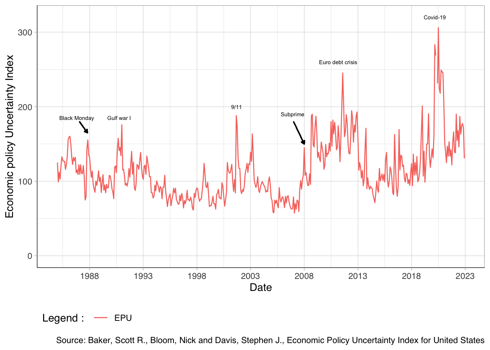

Code
plot_EPU <- ggplot(base, aes(x = Date)) +
geom_line(aes(y = EPU, color = "EPU")) +
scale_x_date(date_labels = "%Y", date_breaks = "5 years") +
scale_y_continuous(limits = c(0,320)) +
theme_light() +
theme(axis.line = element_line(colour = "black",size = 0.2, linetype = "solid")) +
annotate("text", x = as.Date("2020-03-01", format = "%Y-%m-%d"), y = 320, label = "Covid-19", color = "black", angle=0, size = 2) +
annotate("text", x = as.Date("2006-12-01", format = "%Y-%m-%d"), y = 190, label = "Subprime", color = "black", angle=0, size = 2) +
annotate("text", x = as.Date("1986-10-19", format = "%Y-%m-%d"), y = 185, label = "Black Monday", color = "black", angle=0, size = 2) +
annotate("text", x = as.Date("2001-09-11", format = "%Y-%m-%d"), y = 200, label = "9/11", color = "black", angle=0, size = 2) +
annotate("text", x = as.Date("2011-03-01", format = "%Y-%m-%d"), y = 260, label = "Euro debt crisis", color = "black", angle=0, size = 2) +
annotate("text", x = as.Date("1990-10-01", format = "%Y-%m-%d"), y = 185, label = "Gulf war I", color = "black", angle=0, size = 2) +
geom_segment(aes(x = as.Date("2007-01-01", format = "%Y-%m-%d"), y = 180, xend = as.Date("2008-01-01", format = "%Y-%m-%d") , yend=150), arrow = arrow(length = unit(.12, "cm"),type = "closed")) +
geom_segment(aes(x = as.Date("1987-01-19", format = "%Y-%m-%d"), y = 180, xend = as.Date("1987-10-19", format = "%Y-%m-%d"), yend = 165), arrow = arrow(length = unit(.12, "cm"),type = "closed")) +
theme(legend.position = "bottom",
legend.justification = "left",
legend.direction = "horizontal") +
xlab("Date") + ylab("Economic policy Uncertainty Index") +
labs(caption = "Source: Baker, Scott R., Bloom, Nick and Davis, Stephen J., Economic Policy Uncertainty Index for United States", color = "Legend : ") +
theme(text = element_text(family = "Helvetica"))
plot_EPU